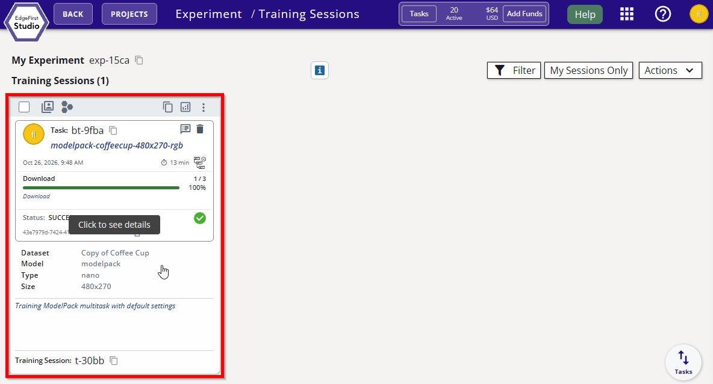

Qualcomm Converter
The Qualcomm Converter compiles an ONNX model exported from an EdgeFirst Studio training session into a single-file Qualcomm QNN artifact (.qnn.onnx) for the Hexagon NPU (HTP) in Qualcomm Dragonwing and Snapdragon processors. The model is quantized with Qualcomm AIMET and compiled offline into an embedded QNN context binary (EPContext), so the device does not pay a compilation cost on first run. The artifact runs through ONNX Runtime with the QNN execution provider.
The converter offers both INT8 and INT16 activations. The Hexagon NPU runs 16-bit activations only as unsigned integers, which the TFLite path cannot produce, so this converter is the way to deploy INT16 models on Qualcomm hardware.
The Qualcomm Converter applies Smart Quantization by cutting the graph at the boundaries the trainer's split_hints declare. On this target the split is a choice rather than a hardware requirement, and it is the largest accuracy lever at INT8: the optimization profiles below differ mainly in where the cut is made.
Model Zoo — Supported Models & Benchmarks
For the latest supported model list and per-profile accuracy and throughput on the Dragonwing IQ-9075, see the EdgeFirst Model Zoo on Hugging Face. Each model card lists all eight precision, split and quantization combinations and marks the profile each one corresponds to.
Studio Launch Form
| Field | Values | Default | Meaning |
|---|---|---|---|
Target Device (target) |
see Supported Targets | sm8850 |
Target Qualcomm processor. Artifacts are not interchangeable between processors with different Hexagon architectures; this field must match the deployment target. |
Optimization Profile (preset) |
balanced / throughput / accuracy / advanced |
balanced |
Fixed combination of precision, output splitting and quantization. Advanced exposes each setting. |
Optimization profiles
| Profile | Precision | Output Splitting | Quantization | Artifact tag |
|---|---|---|---|---|
Balanced (balanced, default) |
INT8 | Smart | Optimized (TF-Enhanced + SeqMSE) | w8a8-smart-tfe-seqmse |
Highest Throughput (throughput) |
INT8 | Logical | Optimized (TF-Enhanced + SeqMSE) | w8a8-logical-tfe-seqmse |
Best Accuracy (accuracy) |
INT16, 8-bit image input | Smart | Standard (Min-Max) | w8a16-smart-in8 |
Advanced (advanced) |
chosen | chosen | chosen | depends on the settings |
Every profile calibrates on 100 samples from the calibration snapshot.
Choosing a profile
Start with Balanced. It is the default, with a median loss of about 1 point of mAP against the FP32 model. No other profile was both faster and more accurate on any VisDrone configuration measured, or on 17 of the 21 COCO configurations. The exceptions are nano and small models on COCO-style data, where Highest Throughput trades a few points of accuracy for a higher frame rate.
| Profile | Use when | Avoid when |
|---|---|---|
| Balanced | The default for detection and segmentation at every model size, dataset and input resolution measured. | — |
| Best Accuracy | Accuracy within about 0.1 points of the FP32 model matters more than frame rate. | Throughput-bound deployments. It runs at about 0.35–0.9× the frame rate of Balanced (lowest on medium models and large inputs), with a median 1.65–1.85× the end-to-end latency. |
| Highest Throughput | Nano and small models at 640×640 on datasets of mostly medium and large objects, such as COCO, where the CPU-side box decoding limits frame rate. | Medium models, where it is no faster than Balanced (0.89–1.14×). Small-object datasets and large inputs: on VisDrone it loses 35–60% of the mAP at 640×640 to 1344×768, and 17–25% on tiled models. |
The measured trade-off for Highest Throughput against Balanced on COCO:
| Task | Model size | Box mAP change | Mask mAP change | Frame rate vs Balanced |
|---|---|---|---|---|
| Detection | nano | −1.5 to −2.6 | — | 1.28–2.04× |
| Detection | small | −2.9 to −4.8 | — | 1.00–1.47× |
| Detection | medium | −3.7 to −5.4 | — | 0.89–0.96× |
| Segmentation | nano | −2.0 to −2.7 | −0.4 to −0.8 | 1.39–1.42× |
| Segmentation | small | −3.5 to −3.9 | −0.9 to −1.2 | 1.29–1.43× |
| Segmentation | medium | −4.1 to −5.0 | −0.9 to −1.6 | 0.97–1.14× |
Highest Throughput also cuts end-to-end latency by a median 20–25% compared with Balanced, because the box decoding stays on the NPU rather than running on the CPU after inference.
How these figures were measured
All figures on this page come from the Qualcomm Converter 0.7.3 benchmark on a Dragonwing IQ-9075 EVK, measured with the EdgeFirst Profiler 1.19.0: 57 configurations, of which 21 are COCO (YOLOv5, YOLOv8, YOLO11 and YOLO26 detection; YOLOv8, YOLO11 and YOLO26 segmentation; nano, small and medium at 640×640) and 36 are VisDrone (YOLOv8, YOLO11 and YOLO26 nano, small and medium at 640×640, 1280×1280, 1344×768 and 640×640 tiled). Accuracy is box mAP50-95 on the full validation set unless marked as mask mAP; the FP32 reference is the same model run in ONNX Runtime. Frame rate is the profiler's pipelined throughput. All eight combinations are published in the EdgeFirst Model Zoo.
Advanced settings
Selecting Advanced starts from the Balanced settings; nothing changes until a setting is changed.
| Setting | Values | Default | Meaning |
|---|---|---|---|
Precision (precision) |
int8 (w8a8) / int16 (w8a16) |
int8 |
Activation width. Weights are always 8-bit, symmetric, per channel. INT16 models take an 8-bit image input. |
Output Splitting (split_mode) |
smart / logical / combined |
smart |
Where the graph is cut; see below. |
Quantization (quantization) |
optimized / standard |
optimized |
optimized is TF-Enhanced calibration with SeqMSE weight tuning; standard is Min-Max calibration. |
Calibration Samples (max_samples) |
0–500 (0 = all) |
100 |
Samples taken from the calibration snapshot. 100 samples matched or beat the full snapshot on every model tested, and conversion is several times faster. |
Output Splitting.
smartcuts at the per-scale prediction convolutions, so each scale's boxes, scores and mask coefficients get their own quantization scale. Box decoding (DFL and box assembly) moves off the NPU into the HAL on the CPU.logicalkeeps the decoder on the NPU and cuts only at the final concatenation, soboxes,scoresandmask_coefseach get their own scale but the decoding itself runs in the quantized graph.combinedleaves the reference model's outputs unchanged. It is not a tuning option, and it is not a deployment fallback. It exists only so that modelssmartandlogicalcannot split, such as end-to-end (NMS-free) exports, can still be converted for testing and benchmarking. End-to-end models are not supported for deployment on the Hexagon NPU (see Known Limitations). To deploy, export the standard (non-end-to-end) model and convert it withsmartorlogical.
At INT8 the split matters most. Logical splitting gave up a median 3.7 points of mAP against Smart on COCO and 11 points on VisDrone, because box regression and DFL decoding run in INT8 on the NPU, and small objects need fine box precision. At INT16 the split hardly matters: Logical is about 0.3 points below Smart on both datasets.
Quantization. Optimized quantization is what makes INT8 with Smart splitting work on medium models and small objects. On VisDrone it halved the median loss against FP32 compared with Standard (−2.2 to −1.1 points) and cut the worst case from −10.5 to −4.5 points, at no runtime cost; conversion takes a few minutes longer. At INT16 it makes no measurable difference (±0.1 points), which is why Best Accuracy uses Standard.
INT16 with Logical splitting. For latency-sensitive applications that also need near-FP32 accuracy, Advanced with Precision int16, Output Splitting logical and Quantization standard (artifact tag w8a16-logical-in8) has about 20% lower end-to-end latency than Best Accuracy at the same frame rate, for about 0.3 points of extra mAP loss.
Supported Targets
| Value | Processor | Hexagon arch | Status |
|---|---|---|---|
iq9075 |
Dragonwing IQ-9075, also IQ-9100 | v73 | Validated |
iq8275 |
Dragonwing IQ-8275 | v75 | Not yet validated |
sm8850 (default) |
Snapdragon 8 Elite Gen 5 (SM8850) | v81 | Validated |
sm8750 |
Snapdragon 8 Elite (SM8750), also Dragonwing Q-8750 | v79 | Not yet validated |
sm8650 |
Snapdragon 8 Gen 3 (SM8650) | v75 | Not yet validated |
sm8550 |
Snapdragon 8 Gen 2 (SM8550), also Dragonwing QCS8550 | v73 | Not yet validated |
Validated targets have been run on hardware. The others are built from Qualcomm's documented processor-to-architecture mapping but have not yet been loaded on their silicon. The artifact records which applies in qnn.target.validated.
What You Get
One self-contained file, named:
{model}-{w8a8|w8a16}-{smart|logical|combined}[-tfe][-seqmse][-in8].{target}.qnn.onnx
for example yolov8n-w8a8-smart-tfe-seqmse.iq9075.qnn.onnx. In EdgeFirst Studio the model name is prefixed with the training session's name and ID so that sessions do not overwrite each other's artifacts. The tags map to the launch form as follows:
| Tag | Setting |
|---|---|
w8a8 / w8a16 |
Precision INT8 / INT16 |
smart / logical / combined |
Output Splitting |
tfe-seqmse |
Quantization Optimized (absent for Standard) |
in8 |
8-bit image input on an INT16 model |
{target} |
Target Device |
The file contains:
- The quantized graph compiled into a QNN context binary for the selected Hexagon architecture.
- Embedded EdgeFirst metadata (
edgefirst.jsonand labels) in the ONNX model's metadata properties. - A compiled
outputs[]array describing each physical output and its quantization, so the HAL decoder can reassemble boxes, scores and masks. - A
qnntraceability block recording the converter version, target, precision, requested and applied split (split_mode,split_applied), quantization settings and calibration details.
Session inputs and outputs are integer (uint8 or uint16), never float, so camera frames can be written straight into NPU memory. INT16 models take a uint8 image input that the NPU widens to 16 bits with no loss of accuracy.
Converting Your Model
Once training completes in EdgeFirst Studio:
-
Click on the completed training session.

Completed Training Session -
Navigate to the Artifacts tab and click the Qualcomm Converter button under Converters on the right.
-
Pick the Target Device and the Optimization Profile, then click Start App to begin the conversion. Choose Advanced to set the precision, output splitting, quantization and calibration samples individually.
Calibration
Calibration is automatic and required for every precision, since the Hexagon NPU only runs quantized models. EdgeFirst Studio passes the training session's calibration snapshot to the converter, which checks that the snapshot's input geometry (shape, resize mode and tiling) matches the model before quantizing and fails with a clear error if it does not.
Notes
- The converter consumes the ONNX export of an EdgeFirst Studio training session; Studio's training pipelines always emit the right format.
- Conversion runs on CPU in the cloud; no Qualcomm hardware is involved. Each profile takes a few minutes for typical models.
Known Limitations
- Artifacts are locked to the Hexagon architecture they were compiled for: an
sm8650artifact will not load on ansm8850. - Four of the six targets have not yet been validated on hardware (see Supported Targets).
- Smart and Logical splitting need the trainer's split hints and a graph with the structure the split expects. If a split cannot be applied, the conversion fails at the Splitting Outputs stage with a message naming the reason; it does not fall back to another mode.
- End-to-end (NMS-free) models are not supported for deployment. They convert only with Combined splitting, and the Hexagon NPU returns wrong box coordinates for them; use the standard export with Smart or Logical splitting.
- There are no float precisions. The Hexagon NPU requires a quantized model, and a float artifact would silently run on the CPU or GPU instead.
- A conversion that runs out of memory is stopped without an error message, and Studio shows the last stage reached. SeqMSE, the largest memory user, is sized to the job's memory limit, so this is rare.